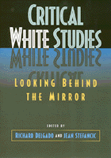

<body bgcolor="#FFFFFF" text="#000000" link="#0000FF" vlink="#CC0000" alink="#CC0000"><center><hr width="350" size="1" align="center" noshade>Over 100 closely edited selections critically examine the notion of whiteness and its relation to social power<hr width="350" size="1" align="center" noshade><p><a href="https://cdcshoppingcart.uchicago.edu/Cart/ChicagoBook.aspx?ISBN=9781566395311&&PRESS=temple" target="_top">Buy this book!</a> | <a href="https://cdcshoppingcart.uchicago.edu/Cart/Cart.aspx?PRESS=temple" target="_top">View Cart</a> | <a href="https://cdcshoppingcart.uchicago.edu/Cart/Cart.aspx?PRESS=temple" target="_top">Check Out</a></p><p></p></center><!--none//--><h1>Critical White Studies</h1>
<H2>Looking Behind the Mirror</H2>
<h3>edited by Richard Delgado and Jean Stefancic</h3>
<P>cloth 1-56639-531-3 $64.50, <FONT COLOR=#990033>Out of Stock Unavailable</FONT>
<br>paper 1-56639-532-1 $50.95, <FONT COLOR=#990033>Available</FONT>
<br>Electronic Book 1-43990-151-1 $50.95 <FONT COLOR=#990033>Out of Stock Unavailable</FONT>
<BR> 704 pp
7x10
</P><h3 align="center"><P><font color="#996633">Honorable Mention for Outstanding Books Awards, Gustavus Myers Center for the Study of Bigotry and Human Rights in North America,
1997</font></P>
</H3>
<p>No longer content with accepting whiteness as the norm, critical scholars have turned their attention to whiteness itself. In <i>Critical White Studies: Looking Behind the Mirror, </i>numerous thinkers, including Toni Morrison, Eric Foner, Peggy McIntosh, Andrew Hacker, Ruth Frankenberg, John Howard Griffin, David Roediger, Kathleen Neal Cleaver, Noel Ignatiev, Cherr&iacute;e Moraga, and Reginald Horsman, attack such questions as:<br>
<ul><li><p>How was whiteness invented, and why?
<li><p>How has the category whiteness changed over time?
<li><p>Why did some immigrant groups, such as the Irish and Jews, start out as nonwhite and later become white?
<li><p>Can some individual people be both white and nonwhite at different times, and what does it mean to "pass for white"?
<li><p>At what point does pride in being white cross the line into white power or white supremacy?
<li><p>What can whites concerned over racial inequity or white privilege do about it?</ul>
<p>Science and pseudoscience are presented side by side to demonstrate how our views on whiteness often reflect preconception, not fact. For example, most scientists hold that race is not a valid scientific category&#151genetic differences between races are insignificant compared to those within them. Yet, the "one drop" rule, whereby those with any nonwhite heritage are classified as nonwhite, persists even today. As <i>The Bell Curve </i>controversy shows, race concepts die hard, especially when power and prestige lie behind them.
<p>A sweeping portrait of the emerging field of whiteness studies, <i>Critical White Studies </i>presents, for the first time, the best work from sociology, law, history, cultural studies, and literature. Delgado and Stefancic expressly offer critical white studies as the next step in critical race theory. In focusing on whiteness, not only do they ask nonwhites to investigate more closely for what it means for others to be white, but also they invite whites to examine themselves more searchingly and to "look behind the mirror."
<BR>&nbsp;<h2>Excerpt</h2><P>Excerpt available at <a href="http://www.temple.edu/tempress">www.temple.edu/tempress</a></p>
<BR>&nbsp;<h2>Contents</h2><P>
<p>Acknowledgments
<br>Introduction
<p><b>Part I: How Whites See Themselves</b>
<br>1. The End of the Great White Male &#150 John R. Graham
<br>2. White Racial Formation: Into the Twenty-First Century &#150 Charles A. Gallagher
<br>3. The Skin We�re In &#150 Christopher Wills
<br>4. The Way of the WASP &#150 Richard Brookkiser
<br>5. Hiring Quotas for White Males Only &#150 Eric Foner
<br>6. Innocence and Affirmative Action &#150 Thomas Ross
<br>7. Doing the White Male Kvetch (A Pale Imitation of a Rag) &#150 Calvin Trillin
<br>8. Growing Up White in America? &#150 Bonnie Kae Grover
<br>9. Growing Up (What) in America? &#150 Jerald N. Marrs
<br>10. White Images of Black Slaves (Is What We See in Others Sometimes a Reflection of <br>What We Find in Ourselves?) &#150 George Fredrickson
<br>Synopses of Other Important Works
<br>From the Editors: Issues and Comments
<br>Suggested Readings
<p><b>Part II: How Whites See Others</b>
<br>11. The White Race Is Shrinking: Perceptions of Race in Canada and Some Speculations on the Political Economy of Race Classification &#150 Doug Daniels
<br>12. Ignoble Savages &#150 Dinesh D�Souza
<br>13. Darkness Made Visible: Law, Metaphor, and the Racial Self &#150 D. Marvin Jones
<br>14. Playing in the Dark: Whiteness and the Literary Imagination &#150 Toni Morrison
<br>15. Transparently White Subjective Decisionmaking: Fashioning a Legal Remedy &#150 Barbara J. Flagg
<br>16. The Rhetorical Tapestry of Race &#150 Thomas Ross
<br>17. Imposition &#150 Richard Delgado and Jean Stefancic
<br>18. Racial Reflections: Dialogues in the Direction of Liberation &#150 Derrick A. Bell, Tracy Higgins, and Sung-Hee Suh, Editors
<br>19. The Tower of Babel &#150 Eleanor Marie Brown
<br>20. The Quest for Freedom in the Post-Brown South: Desegregation and White Self-Interest &#150 Davison M. Douglas
<br>21. �Soulmaning�: Using Race for Political and Economic Gain &#150 Luther Wright, Jr.
<br>22. Dysconscious Racism: Ideology, Identity, and Miseducation &#150 Joyce E. King
<br>Synopses of Other Important Works
<br>From the Editors: Issues and Comments
<br>Suggested Readings
<p><b>Part III: Whiteness: History�s Role</b>
<br>23. Race and Manifest Destiny: The Origins of American Racial Anglo-Saxonism &#150 Reginald Horsman
<br>24. The Invention of Race: Rereading White Over Black &#150 James Campbell and James Oakes
<br>25. �Only the Law Would Rule between Us�: Antimiscegenation, the Moral Economy of Dependency, and the Debate over Rights after the Civil War &#150 Emily Field Van Tassel
<br>26. The Antidemocratic Power of Whiteness &#150 Kathleen Neal Cleaver
<br>27. Who�s Black, Who�s White, and Who Cares &#150 Luther Wright, Jr.
<br>28. Images of the Outsider in American Law and Culture &#150 Richard Delgado and Jean Stefancic
<br>29. Back to the Future with The Bell Curve: Jim Crow, Slavery, and G &#150 Jacqueline Jones
<br>30. The Genetic Tie &#150 Dorothy E. Roberts
<br>Synopses of Other Important Works
<br>From the Editors: Issues and Comments
<br>Suggested Readings
<p><b>Part IV: Whiteness: Law�s Role</b>
<br>31. White Law and Lawyers: The Case of Surrogate Motherhood &#150 Peter Halewood
<br>32. Social Science and Segregation before Brown &#150 Herbert Hovenkamp
<br>33. Mexican-Americans and Whiteness &#150 George A. Martinez
<br>34. Race and the Core Curriculum in Legal Education &#150 Frances Lee Ansley
<br>35. The Transparency Phenomenon, Race-Neutral Decisionmaking, and Discriminatory Intent &#150 Barbara J . Flagg
<br>36. Toward a Black Legal Scholarship: Race and Original Understandings &#150 Jerome McCristal Culp, Jr.
<br>37. Identity Notes, Part One: Playing in the Light &#150 Adrienne D. Davis
<br>38. The Constitutional Ghetto &#150 Robert L. Hayman, Jr., and Nancy Levit
<br>Synopses of Other Important Works
<br>From the Editors: Issues and Comments
<br>Suggested Readings
<p><b>Part V: Witeness: Culture�s Role</b>
<br>39. Do You Know This Man? &#150 Daniel Zalewski
<br>40. The Curse of Ham &#150 D. Marvin Jones
<br>41. Los Olvidados: On the Making of Invisible People &#150 Juan F. Perea
<br>42. White Innocence, Black Abstraction &#150 Thomas Ross
<br>43. Race and the Dominant Gaze: Narratives of Law and Inequality in Popular Film &#150 Margaret M. Russell
<br>44. Residential Segregation and White Privilege &#150 Martha R. Mahoney
<br>45. Mules, Madonnas, Babies, Bathwater: Racial Imagery and Stereotypes &#150 Linda L. Ammons
<br>46. The Other Pleasures: The Narrative Function of Race in the Cinema &#150 Anna Everett
<br>Synopses of Other Important Works
<br>From the Editors: Issues and Comments
<br>Suggested Readings
<p><b>Part VI White Privilege</b>
<br>47. White Privilege and Male Privilege: A Personal Account of Coming to See Correspondences through Work in Women�s Studies &#150 Peggy McIntosh
<br>48. From Practice to Theory, or What Is a White Woman Anyway? &#150 Catharine A. MacKinnon
<br>49. Racial Construction and Women as Differentiated Actors &#150 Martha R. Mahoney
<br>50. The GI Bill: Whites Only Need Apply &#150 Karen Brodkin Sacks
<br>51. Making Systems of Privilege Visible &#150 Stephanie M. Wildman with Adrienne D. Davis
<br>52. Race and Racial Classifications &#150 Luther Wright, Jr.
<br>53. Reflections on Whiteness: The Case of Latinos(as) &#150 Stephanie M. Wildman
<br>54. Stirring the Ashes: Race, Class, and the Future of Civil Rights Scholarship &#150 Frances Lee Ansley
<br>55. The Social Construction of Whiteness &#150 Martha R. Mahoney
<br>Synopses of Other Important Works
<br>From the Editors: Issues and Comments
<br>Suggested Readings
<p><b>Part VII: The Ladder of Whiteness</b>
<br>56. The Mind of the South &#150 W. J . Cask
<br>57. Old Poison in New Bottles: The Deep Roots of Modern Nativism &#150 Joe R. Feagin
<br>58. The First Word in Whiteness: Early Twentieth-Century European Immigration &#150 David Roediger
<br>59. Life on the Color Line &#150 Gregory Williams
<br>60. Others, and the WASP World They Aspired To &#150 Richard Brookkiser
<br>61. Beyond the Melting Pot &#150 Nathan Glazer and Daniel Patrick Moynikan
<br>62. The Economic Payoff of Attending an Ivy-League Institution &#150 Philip J . Cook and Robert H. Frank
<br>63. Useful Knowledge &#150 Mary Cappello
<br>64. Stupid Rich Bastards &#150 Laurel Johnson Black
<br>65. How Did Jews Become White Folks? &#150 Karen Brodkin Sacks
<br>66. How White People Became White &#150 James R. Barrett and David Roediger
<br>67. Paths to Belonging: The Constitution and Cultural Identity &#150 Kenneth L. Karst
<br>68. Is the Radical Critique of Merit Anti-Semitic? &#150 Daniel A. Farber and Suzanna Sherry
<br>Synopses of Other Important Works
<br>From the Editors: Issues and Comments
<br>Suggested Readings
<p><b>Part VIII: The Color Line: Multiracial People and �Passing for White�</b>
<br>69. Passing for White, Passing for Black &#150 Adrian Piper
<br>70. Black Like Me &#150 John Howard Griffin
<br>71. The Michael Jackson Pill: Equality, Race, and Culture &#150 Jerome McCristal Culp, Jr.
<br>72. Did the First Justice Harlan Have a Black Brother? &#150 James W. Gordon
<br>73. Learning How to Be Niggers &#150 Gregory Williams
<br>74. What Does a White Woman Look Like? Racing and Erasing in Law &#150 Katherine M. Franke
<br>75. La G�era &#150 Cherr�e Moraga
<br>76. Notes of a White Black Woman &#150 Judy Scales-Trent
<br>77. Our Next Race Question: The Uneasiness between Blacks and Latinos &#150 Jorge Klor de Alva, Earl Shorris, and Cornel West
<br>78. A Review of Life on the Color Line &#150 Martha Chamallas and Peter M. Shane
<br>79. What Is Race, Anyway? &#150 Tod Olson
<br>Synopses of Other Important Works
<br>From the Editors: Issues and Comments
<br>Suggested Readings
<p><b>Part IX: Biology and Pseudoscience</b>
<br>80. The Misleading Abstractions of Social Scientists &#150 Jerome Kagan
<br>81. Caste, Crime, and Precocity &#150 Andrew Hacker
<br>82. Embodiment and Perspective: Can White Men Jump? &#150 Peter Halewood
<br>83. Bell Curve Liberals: How the Left Betrayed IQ &#150 Adrian Wooldridge
<br>84. Brave New Right &#150 Michael Lind
<br>85. Race and Parentage &#150 Dorothy E. Roberts
<br>86. The Sources of The Bell Curve &#150 Jeffrey Rosen and Charles Lane
<br>87. Hearts of Darkness &#150 John B. Judis
<br>88. Thank You, Doctors Murray and Herrnstein (Or, Who�s Afraid of Critical Race Theory?) &#150 Derrick A. Bell
<br>89. Dangerous Undertones of the New Nativism &#150 Daniel Kanstroom
<br>Synopses of Other Important Works
<br>From the Editors: Issues and Comments
<br>Suggested Readings
<p><b>Part X: White Consciousness, White Power</b>
<br>90. The Rise of Private Militia: A First and Second Amendment: Analysis of the Right to Organize and the Right to Train &#150 Joelle E. Polesky
<br>91. The Changing Faces of White Supremacy &#150 Loretta J . Ross and Mary Ann Mauney
<br>92. Hatelines: Week of Sunday, April 7, 1996 &#150 Compiled by the Center for Democratic Renewal
<br>93. Blue by Day and White by [K]night &#150 Robin Barnes
<br>94. The Race Question and Its Solution &#150 James Armstrong, Jr.
<br>95. The American Neo-Nazi Movement Today &#150 Elinor Lunger
<br>96. Talking about Race with America�s Klansmen &#150 Raphael S. Ezekiel
<br>97. Antidiscrimination Law and Transparency: Barriers to Equality? &#150 Barbara J . Flagg
<br>98. White Supremacy (And What We Should Do about It) &#150 Frances Lee Ansley
<br>99. White Superiority in America: Its Legal Legacy, Its Economic Costs &#150 Derrick A. Bell
<br>Synopses of Other Important Works
<br>From the Editors: Issues and Comments
<br>Suggested Readings
<p><b>Part XI: What Then Shall We Do? A Role for Whites</b>
<br>100. Treason to Whiteness Is Loyalty to Humanity &#150 An lnterview with Noel lgnatiev of Race Traitor Magazine
<br>101. How to Be a Race Traitor: Six Ways to Fight Being White &#150 Noel lgnatiev
<br>102. Rodrigo�s Eleventh Chronicle: Empathy and False Empathy &#150 Richard Delgado
<br>103. Obscuring the Importance of Race: The Implications of Making Comparisons between Racism and Sexism (or Other Isms) &#150 Trina Grillo and Stephanie M. Wildman
<br>104. White Men Can Jump: But Must Try a Little Harder &#150 Peter Halewood
<br>105. �Was Blind, but Now I See�: White Race Consciousness and the Requirement of Discriminatory Intent &#150 Barbara J . Flagg
<br>106. White Women, Race Matters: The Social Construction of Whiteness &#150 Ruth Frankenberg
<br>107. Resisting Racisms, Eliminating Exclusions: South Africa and the United States &#150 David Theo Goldberg
<br>108. Dysconscious Racism: The Cultural Politics of Critiquing Ideology and Identity &#150 Joyce E. King
<br>109. What Should White Women Do? &#150 Martha R. Mahoney
<br>110. Confronting Racelessness &#150 Eleanor Marie Brown
<br>111. A Civil Rights Agenda for the Year 2000: Confessions of an Identity Politician &#150 Frances Lee Ansley
<br>112. What We Believe &#150 The Editors of Race Traitor Magazine
<br>113. Segregation, Whiteness, and Transformation &#150 Martha R. Mahoney
<br>114. White Out &#150 Roger Wilkins
<br>From the Editors: Issues and Comments
<br>Suggested Readings
<p>About the Contributors
<br>Index
</P><BR>&nbsp;<H2>About the Author(s)</H2>
<table><tr><td valign="top"><img src="/tempress/authors/1338_au1.gif" height="90" width="75"></td><td width="100%" valign="middle"><p><B>Richard Delgado</B> is Charles Inglis Thomson Professor of Law at the University of Colorado Law School. He is the editor of <i><a href="1169NE_reg.html" target="_top">Critical Race Theory: The Cutting Edge</a></i> (Temple) and the author of several books, including <i>Failed Resolutions: Social Reform and the Limits of Legal Imagination, Words that Wound: Critical Race Theory, Assaultive Speech, and the First Amendment, </i>and the 1995 Pulitzer Prize nominee <i>The Rodrigo Chronicles: Conversations on Race and America.</i></P></td></tr></table><table><tr><td valign="top"><img src="/tempress/authors/1338_au2.gif" height="90" width="75"></td><td width="100%" valign="middle"><p><B>Jean Stefancic </B>is Research Associate in Law at the University of Colorado Law School. She is co-author (with Delgado) of <i><a href="1316_reg.html" target="_top">No Mercy: How Conservative Think Tanks and Foundations Changed America's Social Agenda</a></i> (Temple), <i>Failed Revolutions: Social Reform and the Limits of Legal Imagination, </i>and <i>Must We Defend Nazis? Hate Speech, Pornography, and the New First Amendment.</i></P></td></tr></table>
<BR><H2>Subject Categories</H2>
<p><A HREF="/tempress/law.html" TARGET="_top">Law and Criminology</a>
<BR><A HREF="/tempress/general.html" TARGET="_top">General Interest</a>
<BR><A HREF="/tempress/african.html" TARGET="_top">African American Studies</a>
</p>
<p align="center"><a href="https://cdcshoppingcart.uchicago.edu/Cart/ChicagoBook.aspx?ISBN=9781566395311&&PRESS=temple" target="_top">Buy this book!</a> | <a href="https://cdcshoppingcart.uchicago.edu/Cart/Cart.aspx?PRESS=temple" target="_top">View Cart</a> | <a href="https://cdcshoppingcart.uchicago.edu/Cart/Cart.aspx?PRESS=temple" target="_top">Check Out</a></p><p><font face="Arial" size="1"><a href="copyright.html" onMouseOver="window.status='Web Copyright Policy';return true;" onMouseOut="window.status=''" title="Web Copyright Policy">&copy;</a> 2015 <a href="http://www.temple.edu" target="new" onMouseOver="window.status='Link to Temple University home page';return true;" onMouseOut="window.status=''" title="Link to Temple University home page">Temple University</a>. All Rights Reserved. http://www.temple.edu/tempress/titles/1338_reg.html</font></p>